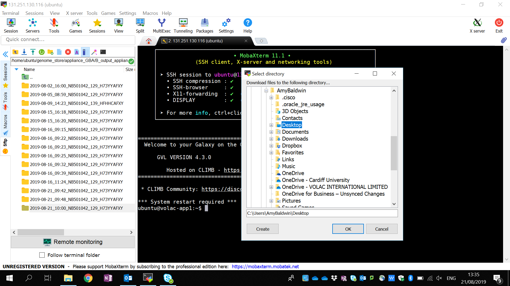

Logging in
Open MobaXterm on your Volac laptop.
If MobaXterm isn’t already installed on you Volac laptop call the Volac Service desk on 0845 3511924 or volac.servicedesk@scc.com, and ask them to install it for you. The information can be found here: https://mobaxterm.mobatek.net/.
If you have logged in previously, double click on a User Session.

Folders can be found in the side bar to the left. Folders and files can be directly dragged and dropped between your personal computer and Tool 3. Tool 3 is located inside the genome_store folder.
Opening a stable connection (recommended)
You currently have access to Tool 3 if you have completed the above section. However, sometimes the network connection between the computer that you are using and the machine where Tool 3 is located can break. If Tool 3 is running when the connection breaks, even if the break is only brief, the Tool will stop. You can tell if this has happen because your terminal’s window will freeze; there may also be a partially populated output folder. A terminal multiplexer (tmux) solves this.
A terminal multiplexer allows the user to start a session and then detach, so a remote process continues running even when the user is disconnected. It also has the benefit of allowing the user to detach from one computer and reattach using a different computer.
To initiate a tmux session in the Appliance terminal window enter:
tmux new -s <name>
For example, you can name your session idris:
tmux new -s idris
Note
- You can open more than one tmux session, each with a different name.
- To detach from a session hold down the Ctrl key and press `b`, release both keys, then press `d`.
- To list existing tmux sessions use `tmux ls`.
- To reconnect to an existing session use `tmux a -t 'name'`.
These commands only work outside of tmux; they are not functional inside a tmux session.